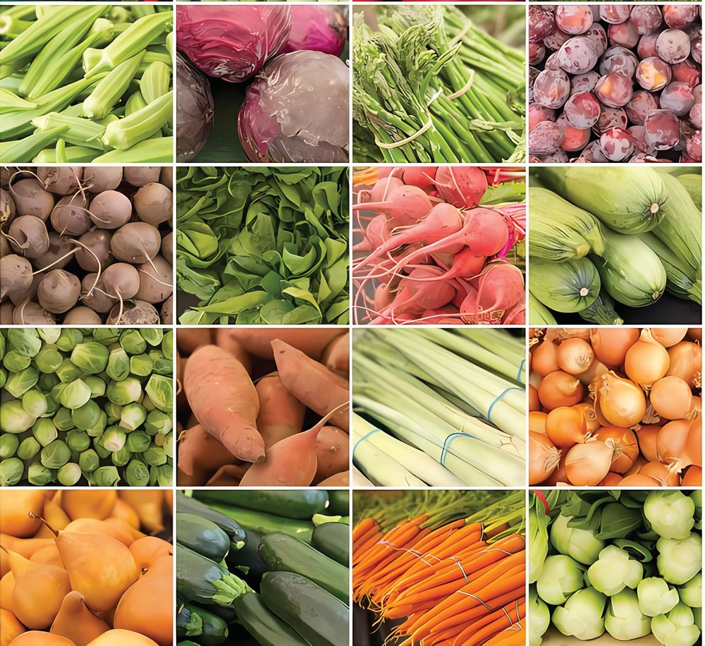
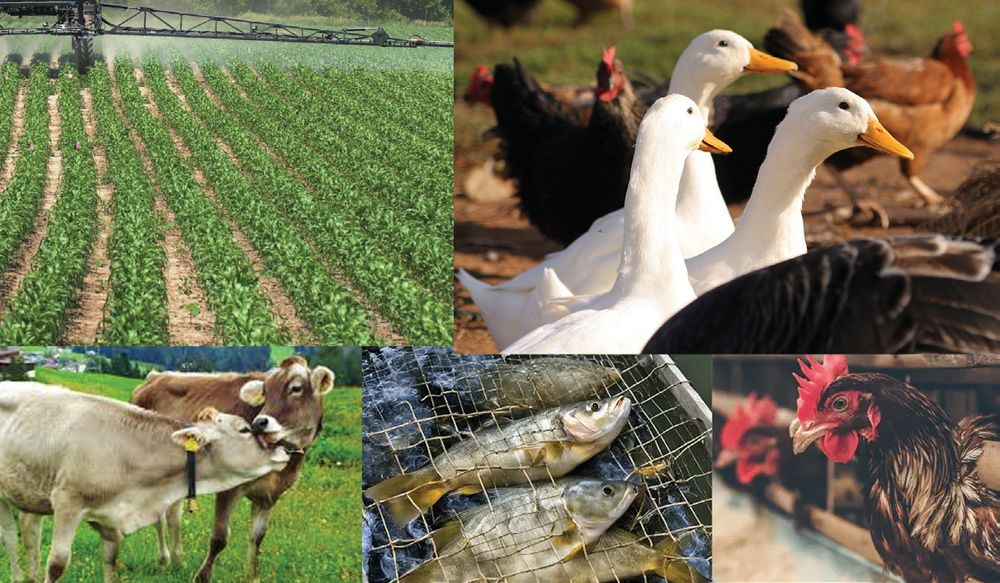
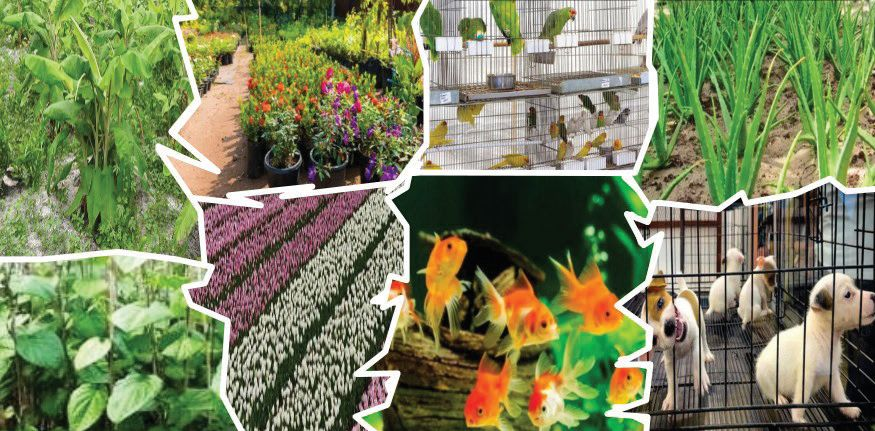

Have you noticed the diligent student who is receiving the
'Karshaka Pratibha Award' for being the best student farmer of
the state government, for producing high-quality vegetables
at a low cost?
•
What do the government aim in giving away such awards
to children?
•
Do you know anyone who has achieved similar success in
agriculture? What activity in the agricultural sector made
them notable?
......................................................................................................
Let us take a look at a portion of the report submitted by this
student farmer to the award selection committee. Read the
given excerpt of the report.
102
Page 103

Figure fig_ch06_p103_01 (Page 103)
BASIC SCIENCE - VIII
I am a student of Class VIII. My family consists of
my father, mother and a sister. We have our own
house and fifteen-cents of land. My father is a
small scale businessman.
I became more interested in farming when I visited a
farm as part of my school activities. Then I gathered
more information by contacting experts in the field
of agriculture. Considering the space constraint, I
made precise plans and started farming. I mainly
cultivate beans, bitter gourd, brinjal, lady finger,
ivy gourd, mint, spinach, green chilli and tomato.
After meeting our household needs, we can also sell
the vegetables, and through this, we can earn about
Rs. 2,000 per week.
I have been receiving unwavering support and
cooperation from the Agriculture Office, Gram
Panchayat Administration, and the Agricultural
Cooperative Society. Recently, I have also been
utilising some online services.
Aren’t you happy on hearing about our friend’s success
story?
There are many individuals in our state who have
achieved success in the field of agriculture. Prepare a
note by examining the news paper reports based on
the indicators.
103
Page 104
Figure fig_ch06_p104_01 (Page 104)
BASIC SCIENCE - VIII
School student seeks patent for tapioca harvester
A school student has garnered media attention for
developing a simple machine for harvesting tapioca. This
little scientist has applied for a patent for his invention.
Success in banana leaf
Edappal: Instead of banana bunches, a young
postgraduate farmer from Edappal has scripted a new
success story through the marketing of banana leaves.
The idea struck when banana bunches were selling at a
low price, prompting him to think: ‘What if I sell banana
leaves instead?’
Student’s leafy greens shop
A college student’s startup, aimed at utilising the market
value of nutrient rich leafy greens achieved record sales
within a year of its inception.
Entrepreneur through turmeric cultivation
Wayanad: A young man who started turmeric cultivation
on two acres of land faced difficulties during harvest
time due to low market prices. When he realised that
numerous value-added products could be made from
turmeric, he became a new entrepreneur.
New brand for Gandhakshala
Gandhakshala, the valuable variety of rice was
cultivated in a unique way and it was launched in the
market under a special brand, received a good response in
the market. Inspired by this, more young entrepreneurs
are planning to start cultivation at more places.
Indicators
What are the ideas you have learned from the news
reports?
What are the circumstances that have prompted
farmers to choose new ways?
What are the other possibilities to make farming
profitable?
104
Page 105
BASIC SCIENCE - VIII
Innovative agricultural initiatives can strengthen rural
economies, enhance food security, and inspire future
generations to engage in farming.
What types of support are available for those starting a
new venture? Complete the given illustration 7.1.
Agriculture-a success story
Online system
Collection of
information about disease,
pest infection
and effective solutions.
Marketing
Cooperative societies
Family members
Financial
Aids
Local Self-Government bodies
Agriculture office/
Krishibhavan
Approval
Training
programmes
Illustration 7.1
Collect information
on government
initiated
programmes to
Maximising Land Utilisation
support new
Our young farmer presents a model as a guiding entrepreneurs and
example for those who regret the lack of space for present it in your
class.
farming.
Will you try to elaborate the illustration?
Figure 7.2 provides insights into how he has effectively
utilised his 15-cent plot of land to the fullest.
Discuss the possibilities and limitations of each method
shown.
Vertical farming is an innovative method to overcome
space constraints. What are its possibilities?
Observe figure 7.3 and prepare a note based on the
indicators through discussion.
Fig. 7.3
Indicators
How does it help to overcome space
constraints?
How does it ensure availability of
light?
How does it help to reduce the use
of water?
Construction cost
Implement a vertical farming system
at school or home at a low cost.
Present a picture of your vertical
farming setup along with a brief
description of its construction in
the class.
Vertical Farming
Vertical farming is an innovative
agricultural
method
where
crops are grown in vertically
stacked layers. A key feature of
vertical farming is that it utilizes
the possibilities of hydroponics
and aeroponics. It can be
implemented even in urban
areas with limited space by
incorporating artificial lighting
and protective structures to
shield crops from rain and
sunlight. Farming can be carried
out independent of climatic
conditions, making it a significant
advantage of this method.
107
Page 108
Figure fig_ch06_p108_01 (Page 108)
BASIC SCIENCE - VIII
Application of Fertiliser
Fertilisers are commonly used in farming, aren't they?
What is the necessity of applying fertilisers?
Examine the given description and note down your
conclusions.
Plant nutrients
Fig. 7.4
The elements required by plants are obtained from the
soil. Of these, nitrogen, potassium, phosphorus, calcium,
magnesium and sulphur are the elements required
in large quantities. These are called macronutrients.
However, elements such as barium, boron, zinc, copper,
manganese, iron, molybdenum, chlorine and nickel are
required only in very small quantities. These are known
as micronutrients. Fertilisers are applied to ensure that
crops receive all the essential nutrients for their growth.
Indicators
Macronutrients and Micronutrients
Need for the application of fertilisers
Some fertilisers are sprinkled on the field before or
after planting. Liquid fertilisers are sprayed on the
leaves while others are mixed with water and sprayed.
Using different methods depending on the type of crop
and soil ensures better yields.
You learned how to produce organic manure at a low
cost using bio bins in the previous classes. Will you
take the initiative to set up a similar system at home?
As you know different types of fertilisers are used in
agriculture.
108
Page 109
BASIC SCIENCE - VIII
•
•
•
Artificial
fertilisers
•
•
•
•
•
•
Ammonium phosphate
Urea
Ammonium sulphate
•
•
•
Fertilisers
Nanofetiliser
Biofertiliser
Rhizobium
Azospirillum
Mycorrhiza
...............................
Nano Urea
Nano Phosphate
Nano Magnesium Sulphate
................................................
•
•
•
Adding microbes to the soil that help in nitrogen and
phosphorus fixing.
Do not harm the texture of soil and decomposers.
•
Bio-residues.
It will not harm either the texture of the soil or
the decomposers.
Plants get the nutrients released from these bio
residues by the decomposers.
Nutrients may be less, the process of
decomposition takes a long time.
Artificially synthesised to increase the nutrient
value of soil.
Plants can easily absorb.
Excessive use of fertilisers is harmful to soil
texture and decomposers.
•
•
•
•
•
•
Artificial fertilisers in the form of nanoparticles.
Can be easily absorbed by the plants.
Required in very small quantities compared to other fertilisers.
Do not affect the chemical texture of soil much.
Complete the illustration 7.2 below.
Illustration 7.2
Gather more information related to this and present a
seminar paper in the class on the topic 'Different types
of fertilisers - advantages and limitations'.
While preparing the seminar paper consider the
following facts also.
•
•
•
The advantages and limitations of each type of
fertiliser.
Soil testing and application of fertilisers.
Fertigation and irrigation
Leaf colour chart
This is an easy way to find out the availability of nitrogen
in crop plants. It helps to find out how much nitrogen
fertilisers need to be added by comparing the colour
of leaves of plants with a standard picture. Light green
colour indicates the deficiency of nitrogen. Dark green
colour indicates that nitrogen is present in adequate
quantities.
Fig. 7.5
The more you give, the more you receive.
All the nutrients absorbed by plants eventually reach
us through the food we consume, don’t they?
The quantities of various nutrients present in 100
grams of edible vegetables from a study are given in
Table 7.1.
By examining the table, collect more information about
the necessity of including local vegetables in the diet.
CarboCalcium
hydrate
(milligram)
(gram)
Local varieties are naturally well-suited to the local
environment. Since they have inherent resistance
to pests and diseases, the use of pesticides can
be minimised. By supporting local pollinators and
beneficial insects, they help maintaining ecological
balance. As these crops require minimal fertilisers
and pesticides, cultivation costs can also be
reduced.
Isn’t it possible to grow such local vegetables in home
gardens? They can enrich your kitchen garden to a
nutrition garden.
Set up a nutrition garden in the school premises and
document your experiences.
For better yield, high quality planting materials
We get high yield when we use high quality planting
materials. Observe the illustration 7.3 showing the
methods of production of high yield planting materials.
Prepare notes on it.
How good it will be, if
there is a rice plant that
gives rice containing
all nutrients?
Fig. 7.7
Do you have the same opinion? Analyse the description
given and draw inferences.
GM Crops (Genetically modified crops)
Fig. 7.8
In crops, new traits can be incorporated by altering
its genetic constitution through genetic engineering.
Cotton plant that resists pest attack, soyabean that
resist weedicides, rice varieties that contain vitamin A
etc are examples for these crops.
Tissue culture
Fig. 7.9
This technique helps to produce a large number of
plants having all the characteristics of the parent plant.
Tissues seperated from the suitable part of a plant are
grown in special nutrient medium to produce saplings.
The methods of grafting, budding, layering and tissue culture
are adopted to produce saplings having the characteristics of
the parent plant.
We have learned in previous classes that, with a little training,
we can do grafting, budding and layering ourselves. But tissue
culture requires more technical knowledge and training.
Collect more information about tissue culture and prepare a
note for the bulletin board.
GM crops have many advantages. However, there is an opinion
that these are a threat to the survival of indigenous species.
Shall we interview experts in the relevant fields and prepare a
report on these matters?
Utilisation of water
Observe the conversation between two farmers.
Have you
stopped
vegetable
farming?
Sometimes continuous
rain. Sometimes severe drought
not having a drop of water.
What shall I do?
Fig. 7.10
What suggestions can you put forward to solve these
problems.
• .......................
•
.......................
•
.......................
Observe the given pictures and collect more information
by field visits. Exhibit them on wall magazine.
Examine the validity of your suggestions by analysing
the description given below.
Green House
This setup helps to cultivate both in rainy season and
in summer season alike.
Green House is constructed using sheets of plastic,
nylon, polyethylene, etc. Pest attack can also be
reduced by this method as all the sides are covered.
This is an irrigation method using pipes and valves to
water the roots in drops. By doing this, loss of water
is reduced to maximum. Another significance of this
method is that the availability of water to all plants is
ensured.
Wick Irrigation
A method of directly supplying water to the roots of
plants through a cotton cloth filter from a water source
is called wick irrigation. It requires less water than drip
irrigation.
Mulching
This is the traditional method of covering the soil in
the fields using dry leaves, hay etc to reduce water loss
due to evaporation. Through this method it is possible
to reduce the growth of weeds and to make the soil
enriched.
Pest control
Below shown figures indicate a problem. Discuss.
A. Pod borer (Legume)
B. Leaf-rolling Caterpillar
(Okra)
C. Stem Borer (Brinjal)
Fig. 7.15
Indicators
Which are the major pests that affect the crops in
our locality?
Which are the different methods adopted to
control pests by the farmers in your locality?
114
Page 115

Figure fig_ch06_p115_01 (Page 115)
BASIC SCIENCE - VIII
Integrated Pest Management- IPM
You know that there are different methods for pest control. While
selecting a pest control method, population density of the pest,
nature of crop, etc. should be considered. The need of farmers
is not to kill all the pests but control their multiplication without
any harm to the crops.
For this it is not always necessary to use pesticides that are
harmful to the environment and human health. Integrated pest
management is the use of mechanical pest control methods with
different kinds of nets and traps, utilising friendly pests, use of
resistant varieties of seeds for farming and reduce the use of
pesticides. During instances of increased pest attack and the
threat of crop loss, pesticides should be used only in suggested
quantities, keeping the precautions.
Integrated Farming
Fig. 7.16
Is farming just about the cultivation of plants?
When birds, fish and other animals are raised along
with crops, it is also farming. Integrated farming is the
practise of nurturing diverse living organisms together.
Visit an integrated farm in your locality and analyse
illustration 7.4 based on the indicators. Prepare a report
on integrated farming.
115
Indicators
Integrated farming-advantages and possibilities
Food safety
Reducing the cost of production
Smart Farming
Smart farming is the effective utilisation of modern
technologies or practices in agriculture. Draw
inferences based on the newspaper report and
illustration 7.5.
The young farmer is the
center of attention
Ernakulam: A young farmer in Ernakulam has become a
role model by leaving his highly paid job in the IT sector
to focus on farming. He has achieved great success by
combining modern agricultural techniques with his IT
expertise. He refers to his farming method as “Smart
Farming”.
116
Page 117
BASIC SCIENCE - VIII
Artificial intelligence
Internet of Things
(IoT)
Smart
farming
By sharing images and information
related to crops, you can find
solutions to problems with the help
of artificial intelligence.
With the help of sensors, moisture,
fertility and pest infestation are
identified and a problem-solving
system is prepared with the help of
machines.
Hydroponics
Plants are grown in nutrient solutions
and with the help of sensors, the
amount of nutrients is detected and
provided as needed.
Aeroponics
Water and nutrients are delivered
to the roots that grow into the air
in a timely manner with the help of
sensors.
Illustration 7.5
Marketing
Should the farming alone be smart enough? In this era of online
marketing, agricultural product marketing also needs to be smart.
Making the processes from harvest to production visible to consumers
directly can increase the credibility and market value of products.
This can be easily achieved through sensors, drones and AI cameras in
farms. Through this it's also possible to deliver the products directly to
the consumers worldwide and increase the global marketing potential
of products with geographical indication (GI) tags.
Geographical indication
Efforts underway to get geographical indication
status for Kerala cashew
Kollam: Kerala is making a move to obtain a Geographical
Indication (GI) tag for its cashews, specifically under
the name "Kerala Cashew". This effort is being driven
by the Kerala State Cashew Development Agency's
Special Officer, who has submitted a recommendation
to the central government. The Ministry of Commerce
and Industry has to review and approve the application.
Haven’t you observed the news report? The
Geographical Indication (GI) tag is granted based on
the unique characteristics of the geographical area
where the product is cultivated, resulting in distinct
differences in the product's taste, colour, aroma, and
nutritional value. This is why certain products from
specific regions receive the GI tag. Such products get
a premium value in the market.
Some examples for agriculture products that received
geographical indication are given below. Find out more
products.
Palakkadan Matta rice
Malabar pepper
Kodungallur pottuvellari
Kuttiattoor Mango
Tirur Vettila
Fig. 7.17
Diversity in Agriculture
Is agriculture only about producing food?
Analyse the given collage (Illustration 7.6) based on the
indicators and prepare a note.
118
Page 119

Figure fig_ch06_p119_01 (Page 119)
BASIC SCIENCE - VIII
Farming for
banana leaf
Horticulture
Poultry
farming
Medicinal plant
cultivation
Betel cultivation
Floriculture
Ornamental fish
farming
Raising pets
Illustration 7.6
Indicators
What are the benefits of diversifying agriculture?
Which of these can be done even by those with
limited space?
Mobile apps for farmers
There are apps that provide weather forecasts, pest
and disease alerts, expert agricultural advice, market
price information, benefit schemes for farmers and
information on organic certification. If these facilities
are properly utilised, the agricultural sector will
undoubtedly flourish.
Ensuring nutritious food for all is a challenge. With
day by day increasing population and changing food
habits, expansion and modernisation of agriculture is
of utmost importance.
119
Page 120
Figure fig_ch06_p120_01 (Page 120)
BASIC SCIENCE - VIII
Let’s Assess
1)
Arrange the information given in boxes A and B in
the table suitably.
A
Satheesh has 15 cents of homestead land and 30
cents of paddy field. He says that paddy cultivation
is not profitable. What suggestions do you have to
make farming profitable by making use of homestead
land and paddy field?
3)
Which is the odd one? What are the common features
of the others?
a) Wick irrigation, Vertical farming, Drip irrigation,
Mulching
b) Hydroponics, aquaponics, aeroponics, geographical
indication
4)
120
‘Farming will be profitable only if all the pests are killed.’
What is your response to this comment of a farmer?
How can effective pest control be implemented?
What are the benefits to farmers by producing
such products?
b)
Prepare a similar illustration of any other crop.
Extended Activities
1)
Find out the common plant diseases in your area.
Prepare a pictorial chart listing their pathogens, mode of
transmission, symptoms and remedies and display it on
the bulletin board
2)
Collect information about the major agricultural research
institutes in Keralam and their contributions to the
agricultural sector and prepare a list of them.
3)
You know that many machines are used in the agricultural
sector to reduce the human effort. The results of thinking
about how to alleviate the difficulties of farmers led to the
discovery of most of the machinery seen today. Design a
model of an innovative device that will be useful to the
farmers in your area.